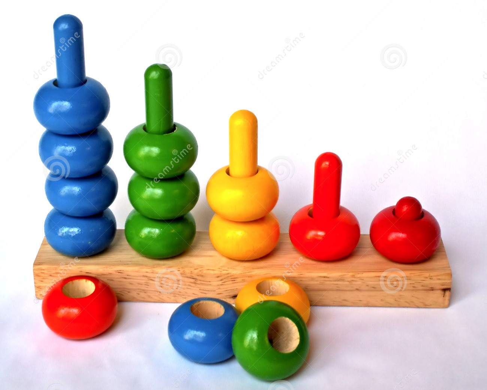

Filtering Searching & Sorting
FILTERING, SEARCHING & SORTING.
Arrays are commonly used to store a set of objectives.
Arrays have helpful methods that allow you to add, remove, filter, and sort the items they contain.
Filtering lets you remove items and only show a subset of them based on selected criteria.
Filters often rely on custom functions to check whether items match your criteria.
Search lets you filter based upon data the users enter.
Sorting allows you to reorder the items in an array.
If you want to control the order in which items are sorted, you can use a compare function.
To support older browsers, you can use a shim script.
JS: